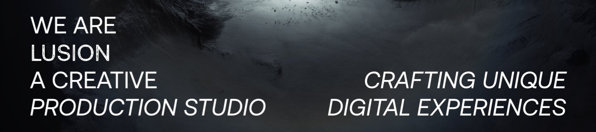
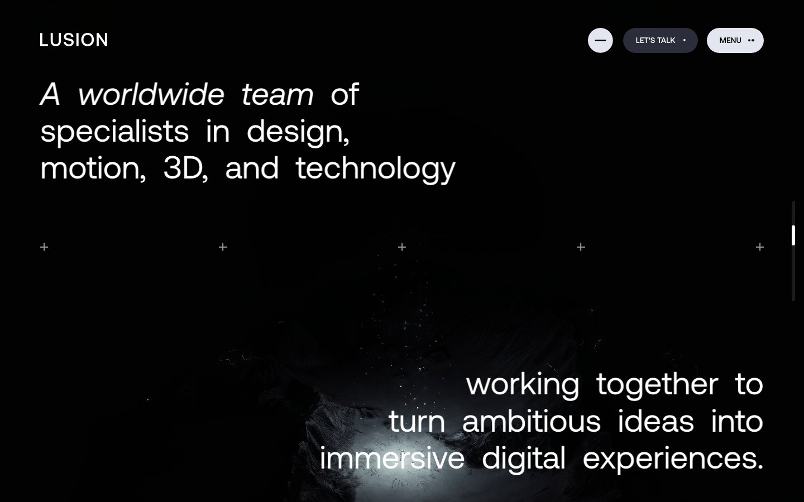
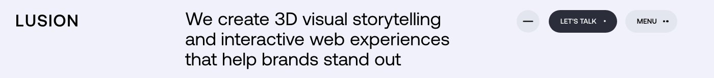

Each section shows Lusion's real Aeonik first (a screenshot of lusion.co), then the same words in Geist at the same size, line height and position, then our copy in Geist. Weight 400 throughout; 500 only on buttons.

We are
Lusion
A creative
Production studio
Crafting unique
digital experiences
I build
ambiguous ideas
into products
where design and
user needs meet

A worldwide team of
specialists in design,
motion, 3D, and technology
working together to
turn ambitious ideas into
immersive digital experiences.
I’m Liam. I love crafting
products where design
and user needs meet.
That’s still how I work. I go
looking for problems
nobody pointed at.

We create 3D visual storytelling
and interactive web experiences
that help brands stand out
Hi, I’m Liam.
I build ambiguous ideas into products where design and user needs meet.
Scroll to exploreI look for problems nobody pointed at.
Then I test solutions.
And I build it.
My toolkit never stops expanding.
Before design, I spent ten years managing two rock bands and creative projects across a few industries: small teams of specialists making something out of nothing.
If you’re working on something that really matters to people, I’d like to hear about it.